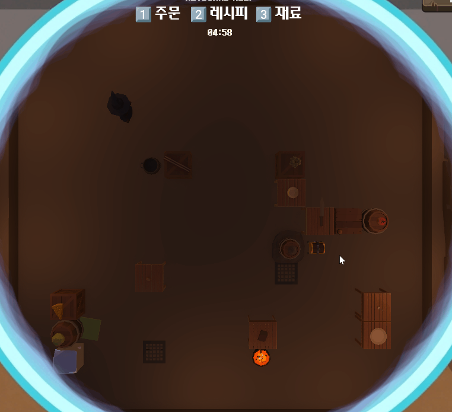
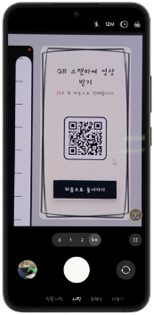
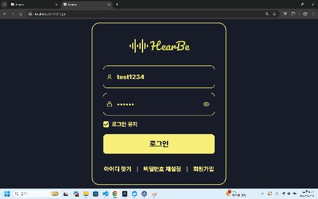
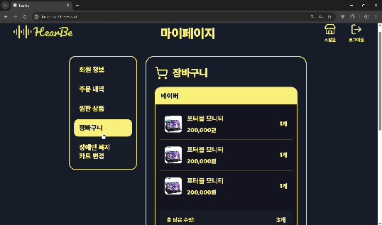
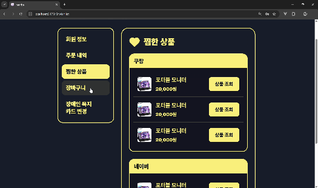
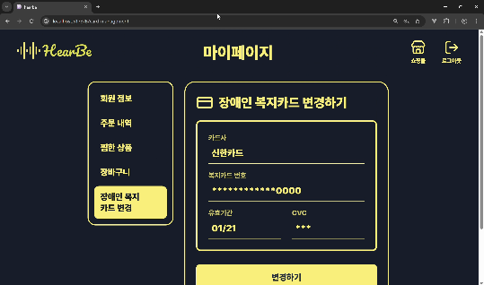

Skills
기술명보다 프로젝트에서 맡은 책임을 기준으로 정리했습니다.
Backend
- Java
- Spring Boot
- REST API
- Controller–Service 구조
Data & Persistence
- JPA
- PostgreSQL
- Redis
- Transaction
API & Security
- JWT
- BCrypt
- Stateless Auth
- DTO
Infra & Delivery
- Docker Compose
- Nginx
- Jenkins
- AWS EC2
Service Integration
- Redis Session
- AI Inference API
- Postman
- Client Integration
Collaboration
- API Specification
- Git
- GitLab
- Jira
Projects
문제와 역할, 구현 근거, 검증 결과가 이어지도록 구성했습니다.


내 요리를 부탁해
인증부터 데이터 저장과 배포까지 담당한 대표 백엔드 프로젝트
두 사용자가 서로 다른 정보로 협력하는 비대칭 요리 게임입니다. 사용자 인증, 게임 결과와 도감 데이터의 저장·조회, 배포 환경을 맡아 클라이언트 기능이 서버 데이터로 이어지는 흐름을 구현했습니다.
- 인증 SecurityConfig를 중심으로 JWT 기반 Stateless 인증·인가와 BCrypt 비밀번호 암호화 적용
- 데이터 Controller–Service–Repository 흐름에서 게임 결과와 해금 도감 데이터를 JPA·PostgreSQL로 저장·조회
- 일관성 게임 성공 결과 저장과 도감 반영이 함께 처리되도록 트랜잭션 단위로 관리
- 배포 Docker Compose, Nginx, Jenkins, AWS EC2 환경을 구성하고 클라이언트 API 연동 확인
- 클라이언트 재료 랜덤 배치 후 이동 가능 경로를 검증하는 절차적 맵 생성 로직 구현


JipChak
AI 추론 결과를 사용자 기능으로 연결한 백엔드·인프라 프로젝트
실시간 인형뽑기 성공 확률을 시각화하고, 게임 종료 후 영상을 QR로 제공하는 서비스입니다. 모델 개발 자체보다 추론 결과와 녹화 데이터를 서버 기능으로 전달하는 시스템 연결에 집중했습니다.
- 서비스 연계 RunPod 추론 결과가 백엔드 API와 AWS 환경을 거쳐 웹 화면에 전달되는 흐름 구성
- 세션·메타데이터 Redis 기반 QR 세션과 녹화 영상 메타데이터의 생성·조회 흐름을 백엔드 기능에 연결
- AI 로직 RealSense Depth 값과 탐지 결과를 이용하고 2발·3발 집게 구조별 확률 계산 방식 적용
- 재사용성 모델 파일과 집게 구조를 교체할 수 있도록 확률 계산 파이프라인을 분리해 설계
- 운영 기반 Docker 기반 서비스 실행 환경과 AWS 배포 흐름 구성





HearBe
API 소비자 관점에서 계약의 누락을 발견하고 개선한 협업 프로젝트
시각장애인과 저시력 사용자가 음성으로 쇼핑부터 결제까지 진행하는 서비스입니다. 프론트엔드를 담당했지만, 화면 구현에 그치지 않고 API 명세와 응답 데이터의 완결성을 검증했습니다.
- 명세 사용자 흐름에 필요한 기능과 API 요청·응답 항목을 백엔드 팀과 협의
- 검증 Postman으로 회원정보, 주문 내역, 찜 상품, 장바구니 API를 먼저 점검한 뒤 화면 연동
- 문제 발견 주문 상세 정보와 찜 상품의 이미지·가격 등 화면에 필요한 응답 데이터 누락 확인
- 협업 해결 Response·DTO 보완을 요청하고 수정된 API를 다시 검증해 연동 완료
- 사용자 관점 시각장애인·저시력 사용자를 위한 별도 화면과 입력 유효성 검사 구현
Experience
경험의 분야는 달라도, 구조와 흐름을 끝까지 관리하는 방식은 이어집니다.
FROM MANUFACTURING TO BACKEND
현장의 요구사항을 구조로 바꾸던 경험을 서버 개발로 확장했습니다.
제조 장비 설계와 BOM 관리, 부품 발주 업무를 수행하며 요구사항과 구성 요소의 연결 관계를 관리했습니다. 개발 프로젝트에서는 이 경험을 API 계약, 데이터 모델, 서비스 흐름으로 확장해 기능이 실제로 동작하는 지점까지 확인하고 있습니다.
01 · 요구사항을 계약으로
사용자 흐름을 엔드포인트와 요청·응답 DTO로 구체화합니다.
02 · 데이터를 끝까지 추적
생성, 저장, 조회, 전달 과정에서 누락되거나 어긋난 지점을 확인합니다.
03 · 동작으로 검증
Postman 검증과 클라이언트 연동, 배포 환경 실행까지 완료 기준으로 봅니다.